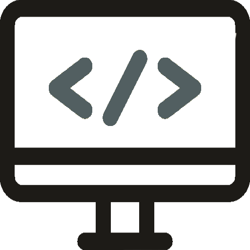
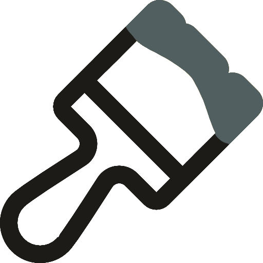

Alex Oroudjev
I am a
"Understanding why software fails is important, but the real challenge is understanding why software works. - Alexander Stepanov
About Me
Alex is the name and programming is the game. Let's get to know me quick and dirty. I'm a coding connoisseur, a tech enthusiast, and a problem-solving wizard.
But don't let the binary digits fool you; I'm not all 1s and 0s. I'm a human behind the code, fueled by coffee, curiosity, and a passion for innovation. I was born and raised in sunny Santa Barbara. Here I met and made personal connections with friends and colleagues. Along my way I picked up several hobbies including hiking, swimming, cars, music, coding, digital art, and 3D printing.
I have completed my education background starting in my hometown gaining my first exposure to various subjects in Santa Barbara City College. It was there that I got my first taste of both computer science and bio/chemistry. I obtained my Bachelor in Biochemistry under the Chemistry department at University of California Santa Barbara. Working throughout all of my years of high school and college career I have acquired a number of skills.
Hobbies


Design/Images:
One of my interests lays within the art department. While I do not consider myself an exemplary artist, I think my experience at thsi point has left me with not only robust knowledge but also appreciation of the fine arts. I do not showcase my work usually as it is generally used for my own personal interests but you can find some of my media on my photos album or my instagram.
Hobby3